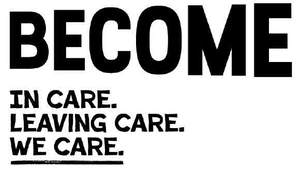
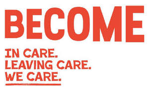
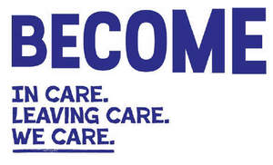

Trade Mark Journal No.2025/019 9 May 2025
UK00004186290 9 April 2025 (9,16,35,36,41,44,45)
Mark 1
Mark 2
Mark 3
Mark 4

Mark 5

Mark 6

- Class 9
- Downloadable electronic publications; downloadable electronic instructional and teaching materials; downloadable information in electronic form; downloadable webcasts, podcasts and videos.
- Class 16
- Printed matter; printed publications; printed leaflets and brochures; instructional and teaching materials; printed course materials, books, information cards, posters, pamphlets, brochures, journals, newsletters and magazines.
- Class 35
- Preparation of promotional and advertising campaigns; preparation of promotional and advertising campaigns to promote public awareness; preparation of promotional and advertising campaigns to promote public awareness in the field of children and young adults that are in or leaving the care system; career development support services; provision of information and advice regarding employment, jobs and careers; advisory, consultancy and information services in relation to all the aforesaid.
- Class 36
- Charitable fundraising; arranging charitable collections; financial grant making; provision of financial advice, information and support; information, support and counselling services in relation to finances and benefits; advisory, consultancy and information services in relation to all the aforesaid.
- Class 41
- Educational and training services; education and training services for children and young adults that are in or leaving the care system; coaching; coaching for children and young adults that are in or leaving the care system; career counselling and coaching services; career counselling and coaching services for children and young adults that are in or leaving the care system; providing advice, guidance and support to children and young adults that are in or leaving care in relation to studying and training at universities and/or colleges; organising of conferences, seminars, courses, and workshops; organising of events for educational and charitable fundraising purposes; publishing including online publishing; provision of non-downloadable electronic publications; advisory, consultancy and information services relating to all the aforesaid.
- Class 44
- Healthcare services including mental healthcare services; healthcare services including mental healthcare services in relation to children and young adults that are in or leaving the care system; advisory, consultancy and information in relation to health and mental health; psychological and mental health counselling services; information, support and counselling services in relation to issues connected with health (including mental health) for children and young adults that are in or leaving the care system; advisory, consultancy and information services in relation to all the aforesaid.
- Class 45
- Social care services and research; personal and social services to meet the needs of individuals; provision of emotional support to children and young adults, including their families; providing information and advice services on issues concerning care systems for children and young adults, foster care, children’s homes, education, employment, careers, finance, housing, health, wellbeing, family contact, and social support services; legal advisory services; lobbying; lobbying in relation to issues concerning children and young adults that are in or leaving the care system; political lobbying; political lobbying in relation to issues concerning children and young adults that are in or leaving the care system; legal research; legal research around issues concerning children and young adults that are in or leaving the care system; formulation of policy; formulation of policy around issues concerning children and young adults that are in or leaving the care system; advisory, consultancy and information services relating to improving the outcomes of children in care; advisory, consultancy and information services in relation to all the aforesaid.
Become Charity
Representative: Bates Wells & Braithwaite London LLP